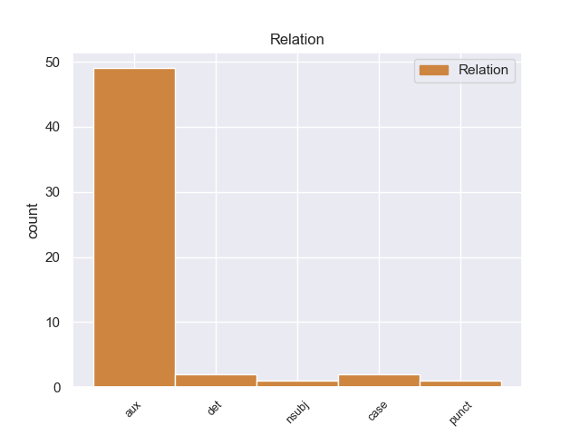
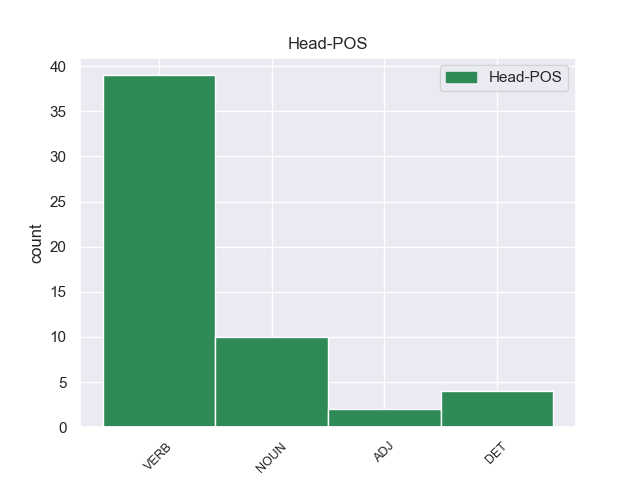

Distribution of features within this leaf



Agreement Rules sorted by frequency.
- When the dependent token is the auxiliary(aux) of the head token, and the dependent token is AUX.
1 Θεωρώ _ _ _ _ 0 _ _ _
2 ότι _ _ _ _ 0 _ _ _
3 πρέπει πρέπει AUX _ Case=Acc|Definite=Def|Gender=Fem|Number=Sing|PronType=Art 7 aux _ _
4 να _ _ _ _ 0 _ _ _
5 πουλάμε _ _ _ _ 0 _ _ _
6 τις _ _ _ _ 0 _ _ _
7 επιτυχίες επιτυχίε NOUN _ Case=Acc|Gender=Fem|Number=Sing 0 _ _ _
8 μας _ _ _ _ 0 _ _ _
9 καλύτερα _ _ _ _ 0 _ _ _
10 και _ _ _ _ 0 _ _ _
11 να _ _ _ _ 0 _ _ _
12 τους _ _ _ _ 0 _ _ _
13 δίνουμε _ _ _ _ 0 _ _ _
14 μεγαλύτερη _ _ _ _ 0 _ _ _
15 έμφαση _ _ _ _ 0 _ _ _
16 . _ _ _ _ 0 _ _ _
1 Το _ _ _ _ 0 _ _ _
2 ευρώ _ _ _ _ 0 _ _ _
3 είναι _ _ _ _ 0 _ _ _
4 επίσης _ _ _ _ 0 _ _ _
5 επιτυχία _ _ _ _ 0 _ _ _
6 της _ _ _ _ 0 _ _ _
7 Ευρωπαϊκής _ _ _ _ 0 _ _ _
8 Κεντρικής _ _ _ _ 0 _ _ _
9 Τράπεζας _ _ _ _ 0 _ _ _
10 , _ _ _ _ 0 _ _ _
11 των _ _ _ _ 0 _ _ _
12 χρηματοπιστωτικών _ _ _ _ 0 _ _ _
13 ιδρυμάτων _ _ _ _ 0 _ _ _
14 , _ _ _ _ 0 _ _ _
15 των _ _ _ _ 0 _ _ _
16 εκατοντάδων _ _ _ _ 0 _ _ _
17 χιλιάδων _ _ _ _ 0 _ _ _
18 ανώνυμων _ _ _ _ 0 _ _ _
19 πολιτών _ _ _ _ 0 _ _ _
20 που _ _ _ _ 0 _ _ _
21 δούλεψαν δούλεψαν VERB _ Case=Acc|Gender=Fem|Number=Sing 0 _ _ _
22 την _ _ _ _ 0 _ _ _
23 πρώτη _ _ _ _ 0 _ _ _
24 Ιανουαρίου _ _ _ _ 0 _ _ _
25 , _ _ _ _ 0 _ _ _
26 και _ _ _ _ 0 _ _ _
27 επιτυχία _ _ _ _ 0 _ _ _
28 επίσης _ _ _ _ 0 _ _ _
29 , _ _ _ _ 0 _ _ _
30 πρέπει _ _ _ _ 0 _ _ _
31 να _ _ _ _ 0 _ _ _
32 το _ _ _ _ 0 _ _ _
33 αναγνωρίσουμε _ _ _ _ 0 _ _ _
34 , _ _ _ _ 0 _ _ _
35 του _ _ _ _ 0 _ _ _
36 Pierre _ _ _ _ 0 _ _ _
37 Werner werner AUX _ Case=Acc|Gender=Fem|Number=Sing 21 nsubj _ _
38 , _ _ _ _ 0 _ _ _
39 του _ _ _ _ 0 _ _ _
40 Valéry _ _ _ _ 0 _ _ _
41 Giscard _ _ _ _ 0 _ _ _
42 d' _ _ _ _ 0 _ _ _
43 Estaing _ _ _ _ 0 _ _ _
44 , _ _ _ _ 0 _ _ _
45 του _ _ _ _ 0 _ _ _
46 Helmut _ _ _ _ 0 _ _ _
47 Schmidt _ _ _ _ 0 _ _ _
48 , _ _ _ _ 0 _ _ _
49 του _ _ _ _ 0 _ _ _
50 François _ _ _ _ 0 _ _ _
51 Mitterrand _ _ _ _ 0 _ _ _
52 , _ _ _ _ 0 _ _ _
53 του _ _ _ _ 0 _ _ _
54 Helmut _ _ _ _ 0 _ _ _
55 Kohl _ _ _ _ 0 _ _ _
56 , _ _ _ _ 0 _ _ _
57 του _ _ _ _ 0 _ _ _
58 Ruud _ _ _ _ 0 _ _ _
59 Lubbers _ _ _ _ 0 _ _ _
60 , _ _ _ _ 0 _ _ _
61 του _ _ _ _ 0 _ _ _
62 Giulio _ _ _ _ 0 _ _ _
63 Andreotti _ _ _ _ 0 _ _ _
64 , _ _ _ _ 0 _ _ _
65 του _ _ _ _ 0 _ _ _
66 John _ _ _ _ 0 _ _ _
67 Major _ _ _ _ 0 _ _ _
68 , _ _ _ _ 0 _ _ _
69 του _ _ _ _ 0 _ _ _
70 Felipe _ _ _ _ 0 _ _ _
71 Gonzαlez _ _ _ _ 0 _ _ _
72 και _ _ _ _ 0 _ _ _
73 επίσης _ _ _ _ 0 _ _ _
74 του _ _ _ _ 0 _ _ _
75 Jacques _ _ _ _ 0 _ _ _
76 Santer _ _ _ _ 0 _ _ _
77 , _ _ _ _ 0 _ _ _
78 ως _ _ _ _ 0 _ _ _
79 Προέδρου _ _ _ _ 0 _ _ _
80 της _ _ _ _ 0 _ _ _
81 Επιτροπής _ _ _ _ 0 _ _ _
82 . _ _ _ _ 0 _ _ _
1 Σ _ _ _ _ 0 _ _ _
2 τη _ _ _ _ 0 _ _ _
3 συνέλευση _ _ _ _ 0 _ _ _
4 πρέπει πρέπει AUX _ Case=Acc|Definite=Def|Gender=Fem|Number=Sing|PronType=Art 18 det _ _
5 η _ _ _ _ 0 _ _ _
6 πλειοψηφία _ _ _ _ 0 _ _ _
7 όσο _ _ _ _ 0 _ _ _
8 και _ _ _ _ 0 _ _ _
9 η _ _ _ _ 0 _ _ _
10 μειοψηφία _ _ _ _ 0 _ _ _
11 να _ _ _ _ 0 _ _ _
12 έχουν _ _ _ _ 0 _ _ _
13 την _ _ _ _ 0 _ _ _
14 ίδια _ _ _ _ 0 _ _ _
15 πρόσβαση _ _ _ _ 0 _ _ _
16 σ _ _ _ _ 0 _ _ _
17 την _ _ _ _ 0 _ _ _
18 εγκεκριμένη εγκεκριμέν ADJ _ Case=Acc|Gender=Fem|Number=Sing 0 _ _ _
19 βοήθεια _ _ _ _ 0 _ _ _
20 και _ _ _ _ 0 _ _ _
21 σ _ _ _ _ 0 _ _ _
22 τη _ _ _ _ 0 _ _ _
23 δυνατότητα _ _ _ _ 0 _ _ _
24 υποβολής _ _ _ _ 0 _ _ _
25 προτάσεων _ _ _ _ 0 _ _ _
26 και _ _ _ _ 0 _ _ _
27 προώθησής _ _ _ _ 0 _ _ _
28 τους _ _ _ _ 0 _ _ _
29 . _ _ _ _ 0 _ _ _
Disagree Examples:
1 Η _ _ _ _ 0 _ _ _
2 Ομάδα _ _ _ _ 0 _ _ _
3 μου _ _ _ _ 0 _ _ _
4 συμφωνεί _ _ _ _ 0 _ _ _
5 ασφαλώς _ _ _ _ 0 _ _ _
6 με _ _ _ _ 0 _ _ _
7 την _ _ _ _ 0 _ _ _
8 άποψη _ _ _ _ 0 _ _ _
9 της _ _ _ _ 0 _ _ _
10 κ. _ _ _ _ 0 _ _ _
11 Cerdeira _ _ _ _ 0 _ _ _
12 Morterero _ _ _ _ 0 _ _ _
13 ότι _ _ _ _ 0 _ _ _
14 θα _ _ _ _ 0 _ _ _
15 πρέπει πρέπει AUX _ Case=Gen|Gender=Fem|Number=Sing 17 aux _ _
16 να _ _ _ _ 0 _ _ _
17 χρησιμοποιήσουμε χρησιμοποιήσουμός VERB _ Case=Acc|Gender=Fem|Number=Sing 0 _ _ _
18 το _ _ _ _ 0 _ _ _
19 υπάρχον _ _ _ _ 0 _ _ _
20 σύστημα _ _ _ _ 0 _ _ _
21 σημείων _ _ _ _ 0 _ _ _
22 επαφής _ _ _ _ 0 _ _ _
23 σ _ _ _ _ 0 _ _ _
24 το _ _ _ _ 0 _ _ _
25 Ευρωπαϊκό _ _ _ _ 0 _ _ _
26 Δικαστικό _ _ _ _ 0 _ _ _
27 Δίκτυο _ _ _ _ 0 _ _ _
28 , _ _ _ _ 0 _ _ _
29 καθώς _ _ _ _ 0 _ _ _
30 είναι _ _ _ _ 0 _ _ _
31 άσκοπο _ _ _ _ 0 _ _ _
32 να _ _ _ _ 0 _ _ _
33 ορίζουμε _ _ _ _ 0 _ _ _
34 συνεχώς _ _ _ _ 0 _ _ _
35 διαφορετικά _ _ _ _ 0 _ _ _
36 συστήματα _ _ _ _ 0 _ _ _
37 σημείων _ _ _ _ 0 _ _ _
38 επαφής _ _ _ _ 0 _ _ _
39 για _ _ _ _ 0 _ _ _
40 ποικίλες _ _ _ _ 0 _ _ _
41 πρωτοβουλίες _ _ _ _ 0 _ _ _
42 . _ _ _ _ 0 _ _ _
1 Ωστόσο _ _ _ _ 0 _ _ _
2 , _ _ _ _ 0 _ _ _
3 η _ _ _ _ 0 _ _ _
4 Ομάδα _ _ _ _ 0 _ _ _
5 μου _ _ _ _ 0 _ _ _
6 πιστεύει _ _ _ _ 0 _ _ _
7 πως _ _ _ _ 0 _ _ _
8 , _ _ _ _ 0 _ _ _
9 παρόλο _ _ _ _ 0 _ _ _
10 που _ _ _ _ 0 _ _ _
11 οι _ _ _ _ 0 _ _ _
12 ευρωσκεπτικιστές _ _ _ _ 0 _ _ _
13 της _ _ _ _ 0 _ _ _
14 δεξιάς _ _ _ _ 0 _ _ _
15 ενίστανται _ _ _ _ 0 _ _ _
16 σε _ _ _ _ 0 _ _ _
17 οποιαδήποτε _ _ _ _ 0 _ _ _
18 συνεργασία _ _ _ _ 0 _ _ _
19 σε _ _ _ _ 0 _ _ _
20 αυτόν _ _ _ _ 0 _ _ _
21 τον _ _ _ _ 0 _ _ _
22 τομέα _ _ _ _ 0 _ _ _
23 , _ _ _ _ 0 _ _ _
24 όσοι _ _ _ _ 0 _ _ _
25 από _ _ _ _ 0 _ _ _
26 εμάς _ _ _ _ 0 _ _ _
27 δεν _ _ _ _ 0 _ _ _
28 ανήκουμε _ _ _ _ 0 _ _ _
29 σ _ _ _ _ 0 _ _ _
30 την _ _ _ _ 0 _ _ _
31 δεξιά _ _ _ _ 0 _ _ _
32 και _ _ _ _ 0 _ _ _
33 ενδιαφερόμαστε _ _ _ _ 0 _ _ _
34 για _ _ _ _ 0 _ _ _
35 τις _ _ _ _ 0 _ _ _
36 ατομικές _ _ _ _ 0 _ _ _
37 ελευθερίες _ _ _ _ 0 _ _ _
38 , _ _ _ _ 0 _ _ _
39 θα _ _ _ _ 0 _ _ _
40 πρέπει _ _ _ _ 0 _ _ _
41 μεν _ _ _ _ 0 _ _ _
42 να _ _ _ _ 0 _ _ _
43 συμφωνήσουμε _ _ _ _ 0 _ _ _
44 σε _ _ _ _ 0 _ _ _
45 αυτά _ _ _ _ 0 _ _ _
46 τα _ _ _ _ 0 _ _ _
47 μέτρα _ _ _ _ 0 _ _ _
48 , _ _ _ _ 0 _ _ _
49 αλλά _ _ _ _ 0 _ _ _
50 σ _ _ _ _ 0 _ _ _
51 τη _ _ _ _ 0 _ _ _
52 συνέχεια _ _ _ _ 0 _ _ _
53 θα _ _ _ _ 0 _ _ _
54 πρέπει πρέπει AUX _ Case=Gen|Gender=Fem|Number=Sing 67 aux _ _
55 να _ _ _ _ 0 _ _ _
56 ασκήσουμε _ _ _ _ 0 _ _ _
57 πίεση _ _ _ _ 0 _ _ _
58 σ _ _ _ _ 0 _ _ _
59 την _ _ _ _ 0 _ _ _
60 Επιτροπή _ _ _ _ 0 _ _ _
61 και _ _ _ _ 0 _ _ _
62 σ _ _ _ _ 0 _ _ _
63 το _ _ _ _ 0 _ _ _
64 Συμβούλιο _ _ _ _ 0 _ _ _
65 ώστε _ _ _ _ 0 _ _ _
66 να _ _ _ _ 0 _ _ _
67 επιτύχουμε επιτύχουμε VERB _ Case=Acc|Gender=Fem|Number=Sing 0 _ _ _
68 τη _ _ _ _ 0 _ _ _
69 θέσπιση _ _ _ _ 0 _ _ _
70 αυτών _ _ _ _ 0 _ _ _
71 των _ _ _ _ 0 _ _ _
72 εχεγγύων _ _ _ _ 0 _ _ _
73 των _ _ _ _ 0 _ _ _
74 πολιτών _ _ _ _ 0 _ _ _
75 . _ _ _ _ 0 _ _ _
1 Ωστόσο _ _ _ _ 0 _ _ _
2 δεν _ _ _ _ 0 _ _ _
3 ισχύει _ _ _ _ 0 _ _ _
4 μόνο _ _ _ _ 0 _ _ _
5 για _ _ _ _ 0 _ _ _
6 την _ _ _ _ 0 _ _ _
7 πατρίδα _ _ _ _ 0 _ _ _
8 μου _ _ _ _ 0 _ _ _
9 ότι _ _ _ _ 0 _ _ _
10 θα _ _ _ _ 0 _ _ _
11 πρέπει πρέπει AUX _ Case=Gen|Gender=Fem|Number=Sing 13 aux _ _
12 να _ _ _ _ 0 _ _ _
13 επανεξετασθούν ο NOUN _ Case=Acc|Gender=Fem|Number=Sing 0 _ _ _
14 όλες _ _ _ _ 0 _ _ _
15 οι _ _ _ _ 0 _ _ _
16 κρατικές _ _ _ _ 0 _ _ _
17 δαπάνες _ _ _ _ 0 _ _ _
18 , _ _ _ _ 0 _ _ _
19 καθώς _ _ _ _ 0 _ _ _
20 και _ _ _ _ 0 _ _ _
21 οι _ _ _ _ 0 _ _ _
22 κρατικές _ _ _ _ 0 _ _ _
23 επιδοτήσεις _ _ _ _ 0 _ _ _
24 . _ _ _ _ 0 _ _ _
1 Δηλαδή _ _ _ _ 0 _ _ _
2 τα _ _ _ _ 0 _ _ _
3 μειονεκτήματα _ _ _ _ 0 _ _ _
4 και _ _ _ _ 0 _ _ _
5 οι _ _ _ _ 0 _ _ _
6 δαπάνες _ _ _ _ 0 _ _ _
7 που _ _ _ _ 0 _ _ _
8 θα _ _ _ _ 0 _ _ _
9 επωμισθεί ο VERB _ Case=Acc|Gender=Fem|Number=Sing 0 _ _ _
10 μια _ _ _ _ 0 _ _ _
11 άλλη _ _ _ _ 0 _ _ _
12 τοπική _ _ _ _ 0 _ _ _
13 αρχή _ _ _ _ 0 _ _ _
14 δεν _ _ _ _ 0 _ _ _
15 πρέπει πρέπει AUX _ Case=Gen|Gender=Fem|Number=Sing 9 aux _ _
16 πλέον _ _ _ _ 0 _ _ _
17 να _ _ _ _ 0 _ _ _
18 λαμβάνονται _ _ _ _ 0 _ _ _
19 υπόψη _ _ _ _ 0 _ _ _
20 κατά _ _ _ _ 0 _ _ _
21 την _ _ _ _ 0 _ _ _
22 απόφαση _ _ _ _ 0 _ _ _
23 ανάθεσης _ _ _ _ 0 _ _ _
24 έργου _ _ _ _ 0 _ _ _
25 . _ _ _ _ 0 _ _ _
1 Η _ _ _ _ 0 _ _ _
2 Βεατρίκη _ _ _ _ 0 _ _ _
3 της _ _ _ _ 0 _ _ _
4 Ολλανδίας _ _ _ _ 0 _ _ _
5 ανακοίνωσε _ _ _ _ 0 _ _ _
6 πρόσφατα _ _ _ _ 0 _ _ _
7 ότι _ _ _ _ 0 _ _ _
8 θα _ _ _ _ 0 _ _ _
9 παραιτηθεί _ _ _ _ 0 _ _ _
10 από _ _ _ _ 0 _ _ _
11 το _ _ _ _ 0 _ _ _
12 θρόνο _ _ _ _ 0 _ _ _
13 της _ _ _ _ 0 _ _ _
14 χώρας _ _ _ _ 0 _ _ _
15 σ _ _ _ _ 0 _ _ _
16 τις _ _ _ _ 0 _ _ _
17 30 _ _ _ _ 0 _ _ _
18 Απριλίου _ _ _ _ 0 _ _ _
19 και _ _ _ _ 0 _ _ _
20 πως _ _ _ _ 0 _ _ _
21 διάδοχός διάδοχός VERB _ Case=Acc|Gender=Fem|Number=Sing 0 _ _ _
22 της _ _ _ _ 0 _ _ _
23 θα _ _ _ _ 0 _ _ _
24 είναι ο AUX _ Case=Gen|Gender=Neut|Number=Sing 21 det _ _
25 ο _ _ _ _ 0 _ _ _
26 πρίγκηπας _ _ _ _ 0 _ _ _
27 Γουλιέλμος _ _ _ _ 0 _ _ _
28 - _ _ _ _ 0 _ _ _
29 Αλέξανδρος _ _ _ _ 0 _ _ _
30 . _ _ _ _ 0 _ _ _